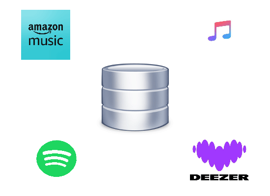

TrackBase est un site internet utilisant une base de données
alimenter grâce à la communauté permettant de retrouver une musique
avec des filtres précis et efficaces tout en permettant
la gestion de playlist en gardant un aspect communautaire.
Pourquoi TrackBase ?
TrackBase est un site internet utilisant une base de données
alimenter grâce à la communauté permettant de retrouver une musique
avec des filtres précis et efficaces tout en permettant
la gestion de playlist en gardant un aspect communautaire.